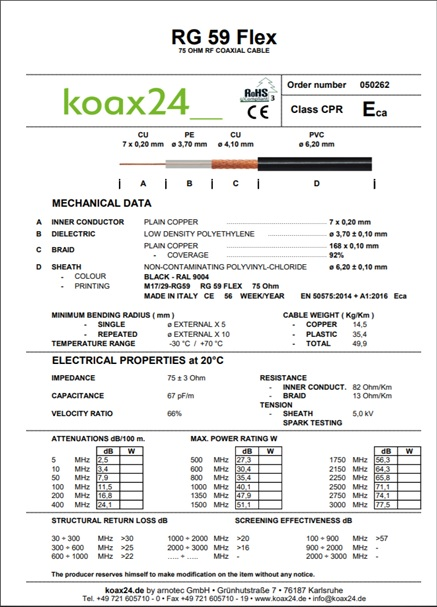

Los fabricantes de cables coaxiales proporcionan las hojas de datos de sus productos. En ellas presentan los parámetros de los cables que ponen a disposición del cliente.
A continuación, se presenta las hojas de datos de un cable coaxial. En ella se puede observar que los para dos secciones, los parámetros mecánicos y los parámetros eléctricos.
https://www.koax24.de/storage/datasheet/de/050285_Datenblatt_RG59FXLSNH.pdf
Pondremos atención los parámetros eléctricos ubicado en la parte final de la hoja de datos, en ella podemos observar que el cable coaxial tiene:
1.- Una impedancia característica de 75 Ohms, ecuación 15.
2.- Una capacitancia por unidad de longitud de 67 pF/m, modelo de la línea de trasmisión.
3.- Una resistencia por unidad de longitud del conductor central 82 Ohms/m, modelo de la línea de trasmisión.
4.- Una velocidad de propagación normalizada a la velocidad de propagación de las ondas electromagnéticas en el vacío de 66 % (este parámetro debe interpretarse el cociente de la ecuación (16) entre la velocidad de la luz en el espacio vacío).
5.- La atención por cada 100 metros es de 3.5 dB/m, ecuación (14). Este parámetro se debe interpretar como 20 veces el logaritmo en base diez del cociente de la parte real de la parte real de la ecuación (14) dividida por 100 metros).